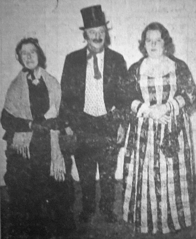
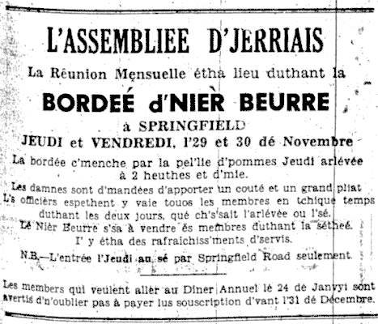

La Bordée d'Nièr Beurre

 Pour la deuxième fais, L'Assembliée d'Jèrriais, avait arrangi eune bordée d'nièr beurre, et un grand nombre dé membres lus y trouvîtent en thique temps, et presque tous en habits du temps passé.
Pour la deuxième fais, L'Assembliée d'Jèrriais, avait arrangi eune bordée d'nièr beurre, et un grand nombre dé membres lus y trouvîtent en thique temps, et presque tous en habits du temps passé.
La pell'lie d'pommes c'menchi à deux heuthes et d'mie lé jeudi arlévée, et eune septantaine dé femmes y travaillîtent bein du jusqu'à six heuthes quand il' arrêtîtent pour béthe du thée - des pais au fou, bourdélos, pâté, gâche dé pâte et mervèlles, servis par les danmes du Conmité Social. Au mains 80 membres lus assiévitent ès tablyes, car y avait eune dgiezaine dé mêssieux à fourni les femmes dé pommes.et à clièrgi les p'leûthes. Auprès qu'tous futent bein rassasiés. i' r'cémenchitent en travas comme dé pus bé, et à sept heuthes et d'mie, les pommes 'taient finies dé p'ler.
Lé cidre à cauffer
 Pus tard les hommes lus mîntent entouor la pêle et à mettre lé cidre à cauffer. Un coup chenn'chîn fait, les gens c'menchîtent à lus dispèrser et laîssitent deux-trais hommes en chèrge pour la niet. Quand vînt l'matîn, plusieurs autres hommes lus y trouvîtent pour prendre lus tou à mouer et à mié-matinée les danmes du Comité Social er-rarrivitent pour tchuithe un bouan dîner au fou pour les moueurs et pour ieux-mêmes.
Pus tard les hommes lus mîntent entouor la pêle et à mettre lé cidre à cauffer. Un coup chenn'chîn fait, les gens c'menchîtent à lus dispèrser et laîssitent deux-trais hommes en chèrge pour la niet. Quand vînt l'matîn, plusieurs autres hommes lus y trouvîtent pour prendre lus tou à mouer et à mié-matinée les danmes du Comité Social er-rarrivitent pour tchuithe un bouan dîner au fou pour les moueurs et pour ieux-mêmes.
Visites mémorablyes
Bein dés membres lus y rassemblyîtent dé vièrs deux heuthes car nou-s-attendait eune visite du Gouverneux et sa danme ; malheutheusement lé Général Erskine 'tait prînt ailleurs, mais Lady Erskine vînt avec plusieurs amis, et fut r'chue par lé Président et sa danme et plusieurs officièrs. Lady Erskine, 'tait bein întéressie dans l's habits du temps passé, et i' faut avouer y en avait des bein belles robes ! La pêle prînt l'attention à Lady Erskine étout et ou mînt un lot d'pommes à tchuithe et auprès fut vaie les danmes à prépather l'mangi.
 Eune autre visite qui fut bein appréciée par les membres fut quand M. l'Bailli et Mme. Le Masurier arrivîtent dé vièrs siex heuthes. Moussieu et Mme. Le Masurier lus mîntent tout d'suite à lus aize parmi les membres auprès avait 'té erchus par lé Président, Mme. Gibaut et d's officièrs. La vielle tchuisine fut une grande attraction, et nou viyait l'intéthét qué M. l'Bailli et sa danme ont dans l'Jèrri du temps passé par la manniéthe qu'i' r'gardaient toutes les vielles articlyes ichîn, aussi bein comme dans l'nièr beurre même, quand i' prîntent les deux lus tou' à mouer.
Eune autre visite qui fut bein appréciée par les membres fut quand M. l'Bailli et Mme. Le Masurier arrivîtent dé vièrs siex heuthes. Moussieu et Mme. Le Masurier lus mîntent tout d'suite à lus aize parmi les membres auprès avait 'té erchus par lé Président, Mme. Gibaut et d's officièrs. La vielle tchuisine fut une grande attraction, et nou viyait l'intéthét qué M. l'Bailli et sa danme ont dans l'Jèrri du temps passé par la manniéthe qu'i' r'gardaient toutes les vielles articlyes ichîn, aussi bein comme dans l'nièr beurre même, quand i' prîntent les deux lus tou' à mouer.
Les danmes du Comité Social servîtent un p'tit erpas à lus visiteurs distindgis devant qu'i' lus en r'futent pour un autre appouaintment ailleurs.
Divèrtiss'ment
I' y'avait des raffraîchissments pour tous à bein bouan marchi et auprès les membres du Comité Dramatique avaient arrangi des gammes et du rêvillon - d'la danse avec un accordéon à fourni la musique, et des chansons.

Duthant la séthée i' y eut eune parade dé vièrs habits - par les danmes à c'menchi. I' en eut eune chînquantaine, et ch'fut bein difficile dé chouaisi la milleuthe. Les jannes demouaîselles étout pathaissaient bein. Nou se d'mande si les mêssieux n'taient pas hardis assez d'lus montrer, car rein qu'eune dgiexaine fit lé tou ! Les gagnants ichîn futent la Dlle. Picot, la Dlle. Ruth Amy et l'Sieur R. Baudains.
Rêunion mensuelle
La réunion mensuelle, qui fut bein courte, eut lieu auprès, et lé rapport dé la rêunion du mais d'octobre fut liu et accepté et 12 nouvieaux membres d'êlus. Lé Président annoncit la préchaine rêunion, eune séthée d'Noué à St. Brélade, lé 15 dé décembre, et l'dîner annuel à la Pomme d'Or lé 24 dé janvyi tchi veint.
Dréchi l'nièr beurre
Pus tard lé nièr beurre, qu'avait 'té à tchuithe, tout l'temps, s'trouvit près à haller dé d'sus l'feu et dréchi, à c'menchi en pots-à-lait, et auprès en p'tits pots pour être couvert et vendu ès membres. Chenn'chîn n'prînt pas bein longtemps, et pourtant i' y en avait 324 livres, mais tous lus mîntent à aidgi.
Ermerciements
Y' avait tant d'catchet qué ch'en 'tait pon - possiblye dé ouï touos les r'merciements qué 1'Président fit à la fin. Mais des sincéthes ermerciements sont deues, preumiéthement, ès danmes qui vîntent p'ler les pommes et ès mêssieux à lus aidgi, et la Dlle Le Boutillier en chèrge.
Ès mêssieux qui travaillîtent du à mouer, souos les mêssieux G. Le. Masurier, G. Perchard et D. P. de la Haye. Les siens qu'arrangîtent la vielle tchuisine si bein, à tous les membres qu'eudrent la bonté d'apporter autchune sorte dé mangeaille. Ès membres du Conmité Dramatique pour aver arrangi lé divèrtiss'ment pour la séthée. À touos les membres du Conmité Social, prîncipalement ès danmes pour tout lus travas à prépather et souangni des raffraîchiss'ments les deux jours. À touos les membres qui vîntent supporter la bordée - en effet à autchun qu'aidgi sus tchique sens pour faithe un succès d'la deuxième bordée d'nièr beurre.
Evening Post 11/12/1962

Viyiz étout: